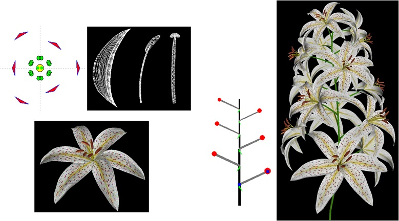

Floral diagrams and inflorescences:Interactive flower modeling using botanical structural constraints

Abstract
We present a system for modeling flowers in three dimensions quickly and easily while preserving correct botanical structures. We use floral diagrams and inflorescences, which were developed by botanists to concisely describe structural information of flowers. Floral diagrams represent the layout of floral components on a single flower, while inflorescences are arrangements of multiple flowers. Based on these notions, we created a simple user interface that is specially tailored to flower editing, while retaining a maximum variety of generable models. We also provide sketching interfaces to define the geometries of floral components. Separation of structural editing and editing of geometry makes the authoring process more flexible and efficient. We found that even novice users could easily design various flower models using our technique. Our system is an example of application-customized sketching, illustrating the potential power of a sketching interface that is carefully designed for a specific application.
Information
Materials
Takashi Ijiri, Shigeru Owada, Makoto Okabe, and Takeo Igarashi:
Floral diagrams and inflorescences: Interactive flower modeling using botanical structural constraints.
Transactions on Graphics, 24, 3, pp. 720-726, 2005.